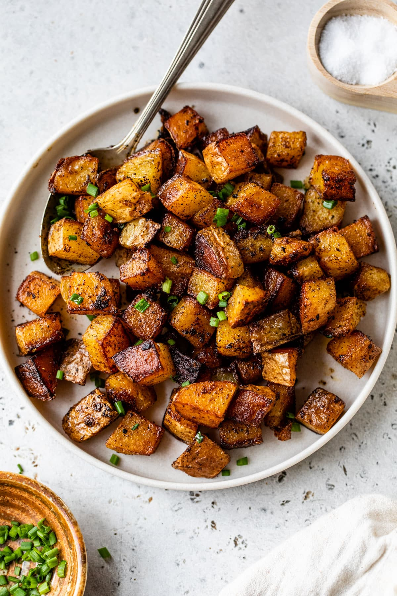

potatos

Description
>
Description
Home fry potatoes are diced or cubed potatoes, pan-fried until crispy on the outside and tender on the inside. Typically seasoned with salt, pepper, and sometimes garlic or onion, they’re a popular breakfast side dish. The golden-brown exterior and fluffy interior make them a perfect complement to eggs, bacon, or toast.
Ingredients
- Yellow potatos
- Spices
- Lard/tallow/butter/olive oil
Steps
- Peel and dice 2-3 potatoes into small cubes.
- Heat a couple of tablespoons of oil in a skillet over medium heat.
- Add the diced potatoes and season with salt, pepper, and any desired spices (e.g., garlic or paprika).
- Cook, stirring occasionally, until the potatoes are golden and crispy on the outside, and tender on the inside (about 10-15 minutes).
- Serve hot, garnished with herbs or additional seasoning if desired.